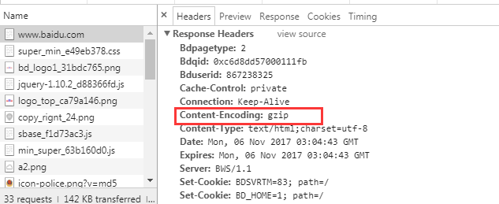
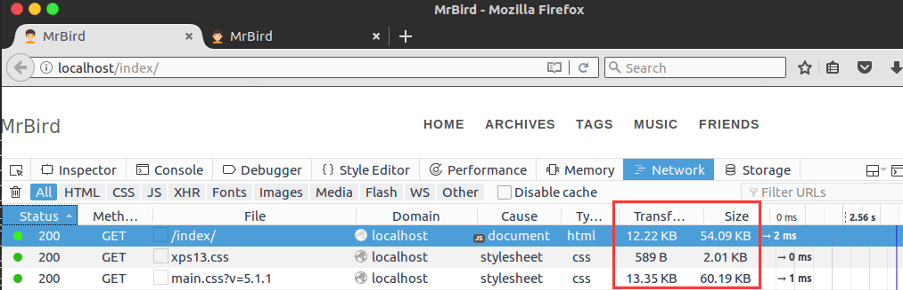
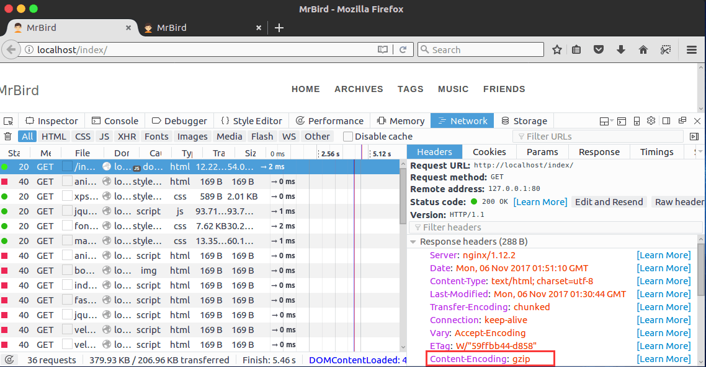
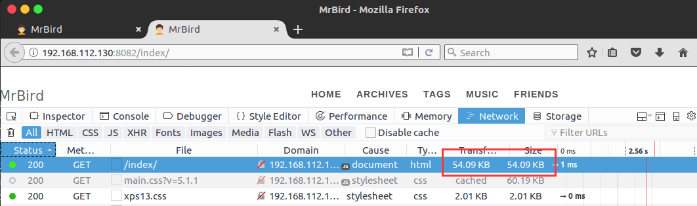

Nginx开启Gzip压缩可以将页面资源进行压缩后传输给浏览器，浏览器判断页面资源是否有进行压缩，如果有，则先进行解压然后再渲染页面。目前流行的浏览器都支持了该项技术（除了远古时代的IE6）。Gzip压缩可以降低网络带宽消耗，同时提升访问速度，使访问者拥有更好的用户体验。
ngx_http_gzip_module
该模块默认开启，主要负责Gzip功能的开启与设置，对响应数据进行在线实时压缩。涉及的指令主要有以下9个：
gzip指令
该指令用于开启或关闭Gzip功能，语法结构如下：
1 | gzip on | off |
默认值为off。
gzip_buffers指令
该指令用于设置Gzip压缩文件使用缓存空间的大小，语法结构如下：
1 | gzip_buffers number size; |
Nginx服务器在进行压缩时，需要向系统申请number*size大小的空间用于存储压缩数据。默认情况下number*size的值为128，size值为系统内存页一页的大小，为4K或8k，即：
1 | gzip_buffers 32 4k | 16 8k |
gzip_comp_level指令
用于设定Gzip压缩率。压缩率级别从1到9，其中1表示压缩率最低，压缩时间最短；9表示压缩率最高，压缩时间最长。语法结构如下：
1 | gzip_comp_level level |
默认值为1。
gzip_disable指令
针对不同类型的客户端发起的请求，可以选择性的开启或关闭Gzip功能。比如IE6对Gzip的支持不好，所以如果发送请求的客户端为IE6，则关闭Gzip的功能。语法如下：
1 | gzip_disable regex ... |
其中regex为浏览器的UA标志的正则表达式。比如：
1 | gzip_disable MSIE [4-6]\. |
即UA字符串包括MSIE 4，MSIE 5，MSIE 6的浏览器发送的请求，Nginx将不进行Gzip压缩。
gzip_http_version指令
早期的HTTP客户端可能不支持Gzip的自解压，所以该指令用于限制开启Gzip压缩的最低HTTP协议版本，语法如下：
1 | gzip_http_version 1.0 | 1.1 |
默认值为1.1。目前来说大多数浏览器都支持Gzip自解压，所以采用默认值即可。
gzip_min_length指令
Gzip压缩功能对于size较大的文件压缩效果明显，而对于一些size很小的文件可能会出现数据量越压缩越大的情况。所以为了防止出现这种情况，可用该指令来限制压缩的最低数据量，语法如下：
1 | gzip_min_length length |
默认值为20，为0时表示不进行限制。一般情况下设置为1kb即可。
gzip_proxied指令
该指令用于设置Nginx服务器是否对后端服务器返回的结果进行Gzip压缩。该指令在使用Nginx服务器的反向代理功能时有效。语法如下：
1 | gzip_proxied off | expired | no-cache | no-store | private | no_last_modified | no_etag | auth | any ... |
off关闭Nginx服务器对后端服务器返回结果进行Gzip压缩，为默认值。expired当后端服务器响应页头部包含用于指示响应数据过期时间的expired头域时，开启Gzip压缩。no-cache当后端服务器响应页头部包含用于通知所有缓存机制是否缓存的Cache-control头域且其指令值为no-cache时，开启Gzip压缩。no-store当后端服务器响应页头部包含用于通知所有缓存机制是否缓存的Cache-control头域且其指令值为no-store时，开启Gzip压缩。private当后端服务器响应页头部包含用于通知所有缓存机制是否缓存的Cache-control头域且其指令值为private时，开启Gzip压缩。no_last_modified当后端服务器响应页头部不包含用于指明需要获取数据最后修改时间的Last-Modified头域时，开启Gzip压缩。no-etag当后端服务器响应页头部不包含用于标识被请求变量的实体值的ETag头域时，开启Gzip压缩。auth当后端服务器响应页头部包含用于标识HTTP授权证书的Authorization头域时，开启Gzip压缩。any无条件开启Gzip压缩。
gzip_types指令
根据响应页的MIME类型选择性的开启Gzip压缩。语法为：
1 | gzip_types mime-types ... |
默认值为text/html，变量值还可以取*，表示对所有MIME类型的页面数据都进行Gzip压缩。
gzip_vary指令
该指令用于设置在使用了Gzip功能时是否发送带有“vary:Accept-Encoding”头域的响应头部。比如打开百度页面的控制台，可看到：

其语法如下：
1 | gzip_vary on | off |
默认值为off。
ngx_http_gzip_static_module
该模块主要负责搜索和发送经过Gzip功能预压缩的数据。如果客户端请求的数据在之前就被压缩过，则直接返回。
和ngx_http_gzip_module主要的区别是，该模块使用的是静态压缩，在HTTP响应头部包含Content-Length头域来指明报文体的长度，用于服务器确定响应数据的长度。
该模块默认关闭，如果需要使用，必须在Nginx程序配置时添加–with-http_gzip_static_module指令。
与该模块有关的命令有如下几个：gzip_static、gzip_http_version、gzip-proxied、gzip_disable和gzip_vary等。
gzip_static指令
该指令用于开启或关闭Gzip静态压缩。语法如下：
1 | gzip_static on | off | always |
其余指令和ngx_http_gzip_module类似。
ngx_http_gunzip_module
该模块用来针对不支持Gzip压缩数据处理的客户端浏览器，对压缩数据进行解压处理。有关的命令如下：gunzip、gunzip_buffers、gzip_http_version、gzip_proxied、gzip_disable和gzip_vary等。
该模块默认关闭，如果需要使用，必须在Nginx程序配置时添加 –with-http_gunzip_module指令。
gunzip指令
该指令用于开启或关闭该模块的功能，语法如下：
1 | gunzip_static on | off |
启用该功能后，如果客户端浏览器不支持Gzip数据处理时，Nginx只是在将数据返回给浏览器前进行了解压处理。当Nginx和后端服务器交互的数据或者本身存储的数据还是使用了Gzip压缩的。这样做是可以保证浏览器解析数据不出现问题，同时减少了和后端服务器之间的数据传输量，降低了本地的存储空间和缓存的使用率。
其余指令和ngx_http_gzip_module模块类似。
配置实例
使用hexo生成的静态页面为例子，配置Nginx如下：
1 | worker_processes 1; |
启动Nginx，访问开启了Gzip压缩的location：http://localhost/index/，显示如下：


可见开启Gzip压缩后，文件大小变小了，并且响应头部包含Content-Encoding: gzip。
访问未开启Gzip压缩的location：http://192.168.112.130:8082/index/，显示如下：
